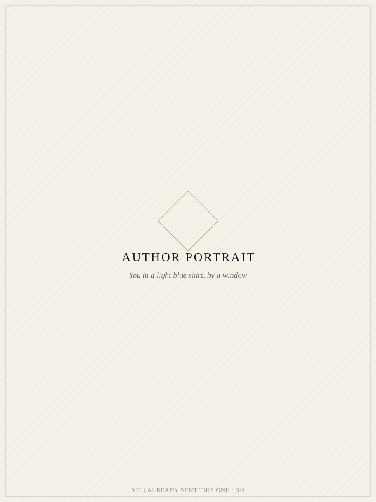

The Story Behind My First Book
Kenyan small and midsize companies chase new customers every day, while a fortune sits untouched in the client list they already have. I spent a year proving it — one interview at a time.
Long before it meant customer, the word client meant something else entirely — cliens, one placed under another's protection and patronage. A customer is a transaction. A client is a trust.
I built Client List on that distinction.
The Asset Hiding In Plain Sight
I kept noticing the same scene, in city after city: a business owner spending everything to win a stranger's attention, while the client who trusted them last month sat forgotten — in a notebook, a spreadsheet, a drawer.
So I did not write an opinion. I personally interviewed 108 small and midsize enterprises across Kenya, one conversation at a time, to find out exactly what was being ignored — and why.
What I found was not a marketing problem. It was a wealth problem. Every business I sat with was already holding an asset. Almost none of them were using it.
The client list — the real wealth, the fortune already in hand — was going untouched while its owners went looking elsewhere.
The Evidence
The hidden treasure within Kenyan small & midsize companies.
Two hundred pages, built entirely from evidence I gathered face to face — not theory borrowed from elsewhere. I personally interviewed 108 small and midsize enterprises across Kenya before writing a single chapter.
I deliberately call them clients, not customers. A client, historically, is someone placed under another's protection and patronage — not merely someone who pays. That distinction is the entire argument of the book.
I wrote and designed every page myself — the manuscript, the typography, the interior layout, the cover. I didn't outsource any of it.
Drawn from 108 face-to-face interviews I conducted across Kenya — evidence gathered firsthand, not theory borrowed from a textbook.
A deep black cover, a single diamond, classical serif typography. I made every typographic and layout decision myself.
Manufactured to specification and shipped home to Kenya — a physical object built to be kept, not skimmed.
How I Gathered The Evidence
Any consultant can publish a framework about customer loyalty. Few will sit across from 108 business owners, in person, and simply listen long enough to hear what they were actually doing wrong.
My method was deliberately unglamorous. No surveys mailed out. No focus groups. Just conversation, notebook in hand, across markets, shopfronts, and offices in every corner of the country I could reach.
I traveled the country to sit face to face with small and midsize business owners — not a sample pulled from a database, but 108 real conversations.
I looked past what each owner said they wanted — more customers — to what they already had and were quietly ignoring: the client list.
I built the book's entire argument from what those 108 owners actually said. Evidence first. Theory nowhere.
How It Actually Happened
Nothing here was delegated. I want to show you exactly how Client List came together — not the polished version, the real one, stage by stage.
It began quietly, before I had a title or an outline — just a pattern I couldn't stop noticing, and a notebook where I started writing it down.
I traveled to sit with 108 small and midsize business owners across Kenya, one conversation at a time. I wasn't selling anything. I was trying to understand what they already had and weren't using.
Two hundred pages, written and rewritten by hand before a single page was typed. I wanted every sentence to earn its place.
I typeset every page myself. No outsourced layout, no template — just the same care I put into the writing, applied to how it would look on the page.
Deep black. One diamond. Classical serif type. I designed it to hold a single idea, the same way the book does.
Ten thousand hardbound copies, off the press — the first time I held the finished object in my hands.
I registered the finished work with the Kenya Copyright Board — making it official, protected, and mine.
I managed the full print run overseas in China myself, overseeing quality on the factory floor to make sure every copy matched what I'd designed.
Thousands of copies, loaded onto a vessel in Shenzhen, bound for Mombasa.
Every shipment needs its paper trail. This bill of lading is the record of that one container's journey home.
No bookstore shelved it. I sold all 10,000 copies myself, in malls and public spaces across the country — one conversation, one reader, at a time.
Every copy printed abroad eventually found its way into a Kenyan reader's hands — because I carried it there myself.

About Me
"I kept meeting business owners spending everything to reach a stranger, while the client who trusted them last year sat forgotten in a drawer. I didn't want to argue the point. I wanted to prove it — one interview at a time."
I personally interviewed 108 small and midsize enterprises across Kenya before writing a word of Client List. I then wrote the manuscript and designed the entire book myself — cover, typography, and interior layout — without outsourcing a single page.
I managed the full print production run overseas in China myself, overseeing quality and the logistics of shipping thousands of copies home. Then I sold all ten thousand copies myself, in malls and public spaces across the country, one reader at a time.
Frank Owen
Author, Client List
In Closing
I didn't have a publisher, a distributor, or a team. I had 108 conversations, a story worth telling, and the discipline to see it through — from the first idea to the last sale. Client List is the proof.
Frank Owen
Author, Client List